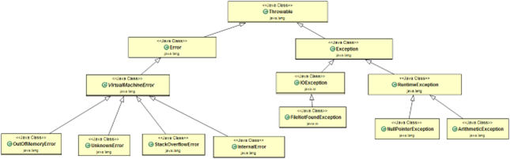

An exception is an error event that can happen during the execution of a program and disrupts its normal flow. The exception can arise from different kinds of situations such as wrong data entered by the user, hardware failure, network connection failure, etc.
Whenever any error occurs while executing a Java statement, an exception object is created, and then JRE tries to find an exception handler to handle the exception. If a suitable exception handler is found, then the exception object is passed to the handler code to process the exception, known as catching the exception. If no handler is found, then the application throws the exception to the runtime environment, and JRE terminates the program.
Java Exception handling framework is used to handle runtime errors only; compile-time errors are not handled by the exception handling framework.
There are four keywords used in Java exception handling:
throw:Sometimes we explicitly want to create an exception
object and then throw it to halt the normal processing of the program.
The throw keyword is used to throw exceptions to the
runtime to handle it.
throws: When we are throwing any checked exception in a method
and not handling it, then we need to use the
throws keyword in the method signature to let the caller
program know the exceptions that might be thrown by the method. The
caller method might handle these exceptions or propagate them to its
caller method using the throws keyword. We can provide
multiple exceptions in the throws clause, and it can be
used with the main() method also.
try-catch:We usetry-catch block for exception
handling in our code. try is the start of the block and
catch is at the end of the try block to handle the
exceptions. We can have multiple catch blocks with a
try, and try-catch blocks can be nested
also. catch block requires a parameter that should be of
type Exception.
finally: The finally block is optional and can be
used only with a try-catch block. Since an exception
halts the process of execution, we might have some resources open that
will not get closed, so we can use the finally block. The
finally block gets executed always, whether an exception
occurs or not.
Java Exceptions are hierarchical, and inheritance is used to
categorize different types of exceptions.
Throwable is the parent class of Java Exceptions
Hierarchy, and it has two child objects – Error and
Exception. Exceptions are further divided into checked
exceptions and runtime exceptions.
Errors are exceptional scenarios that are out of the
scope of application, and it’s not possible to anticipate and recover
from them, for example, hardware failure, JVM crash, or out-of-memory
error.
Checked Exceptions are exceptional scenarios that we can anticipate in
a program and try to recover from it, for example,
FileNotFoundException. We should catch this exception and
provide a useful message to the user and log it properly for debugging
purposes. Exception is the parent class of all Checked
Exceptions.
Runtime Exceptions are caused by bad programming, for example, trying
to retrieve an element from the Array. We should check the length of
the array first before trying to retrieve the element; otherwise, it
might throw ArrayIndexOutOfBoundsException at runtime.
RuntimeException is the parent class of all runtime
exceptions.
Exception and all of its subclasses don’t provide any specific
methods, and all of the methods are defined in the base class
Throwable.
1. String getMessage(): This method returns the
message String of Throwable, and the message can be
provided while creating the exception through its constructor.
2. String getLocalizedMessage(): This method is
provided so that subclasses can override it to provide the
locale-specific messages to the calling program.
Throwable class implementation of this method simply uses
getMessage() method to return the exception message.
3. synchronized Throwable getCause(): This method
returns the cause of the exception or null if the cause
is unknown.
4. String toString(): This method returns the
information about Throwable in String format. The
returned String contains the name of Throwable class and
localized message.
5. void printStackTrace(): This method prints the
stack trace information to the standard error stream. This method is
overloaded, and we can pass PrintStream or
PrintWriter as an argument to write the stack trace
information to the file or stream.
If you are catching a lot of exceptions in a single try block, you will notice that catch block code looks very ugly and mostly consists of redundant code to log the error. Keeping this in mind, Java 7 introduced one of the features called the multi-catch block where we can catch multiple exceptions in a single catch block. The catch block with this feature looks like below:
catch(IOException | SQLException | Exception ex)
{
logger.error(ex);
throw new MyException(ex.getMessage());
}
Most of the time, we use the finally block just to close the resources, and sometimes we forget to close them and get runtime exceptions when the resources are exhausted. These exceptions are hard to debug, and we might need to look into each place where we are using that type of resource to make sure we are closing it. So, Java 7 introduced one of the improvements, try-with-resources, where we can create a resource in the try statement itself and use it inside the try-catch block. When the execution comes out of the try-catch block, the runtime environment automatically closes these resources. Sample of try-catch block with this improvement is:
try (MyResource mr = new MyResource())
{
System.out.println("MyResource created in try-with-resources");
}
catch (Exception e)
{
e.printStackTrace();
}
1. Checked Exceptions should be handled in the code using try-catch block or else the method should use the throws keyword to let the caller know about the checked exceptions that might be thrown from the method. Unchecked Exceptions are not required to be handled in the program or to mention them in the throws clause of the method.
2. Exception is the superclass of all checked exceptions whereas RuntimeException is the superclass of all unchecked exceptions. Note that RuntimeException is the child class of Exception.
3. Checked exceptions are error scenarios that require to be handled in the code, or else you will get compile time error. For example, if you use FileReader to read a file, it throws FileNotFoundException and we must catch it in the try-catch block or throw it again to the caller method. Unchecked exceptions are mostly caused by poor programming, for example, NullPointerException when invoking a method on an object reference without making sure that it’s not null. For example, I can write a method to remove all the vowels from the string. It’s the caller’s responsibility to make sure not to pass a null string. I might change the method to handle these scenarios but ideally, the caller should take care of this.
4. Checked exceptions should be handled in the code using a try-catch block, or else, the method should use the throws keyword to let the caller know about the checked exceptions that might be thrown from the method. Unchecked Exceptions are not required to be handled in the program or to mention them in the throws clause of the method.
5. The exception is the superclass of all checked exceptions, whereas RuntimeException is the superclass of all unchecked exceptions. Note that RuntimeException is the child class of Exception.
6. Checked exceptions are error scenarios that require being handled in the code, or else, you will get a compile-time error. For example, if you use FileReader to read a file, it throws the FileNotFoundException and we must catch it in the try-catch block or throw it again to the caller method. Unchecked exceptions are mostly caused by poor programming, for example, the NullPointerException when invoking a method on an object reference without making sure that it’s not null. I can write a method to remove all the vowels from the string. It’s the caller's responsibility to make sure not to pass a null string. I might change the method to handle these scenarios, but ideally, the caller should take care of this.
7. Checked and unchecked exceptions are also known as compile-time and run-time exceptions respectively.
throws keyword is used with method signature to declare the exceptions that the method might throw whereas throw keyword is used to disrupt the flow of the program and handing over the exception object to runtime to handle it.
We can extend Exception class or any of its subclasses to create our custom exception class. The custom exception class can have its own variables and methods that we can use to pass error codes or other exception-related information to the exception handler.
package com.journaldev.exceptions;
import java.io.IOException;
public class MyException extends IOException
{
private static final long serialVersionUID = 4664456874499611218L;
private String errorCode = "Unknown_Exception";
public MyException(String message, String errorCode)
{
super(message);
this.errorCode = errorCode;
}
public String getErrorCode()
{
return this.errorCode;
}
}
OutOfMemoryError in Java is a subclass of
java.lang.VirtualMachineError, and it’s thrown by JVM
when it ran out of heap memory. We can fix this error by providing
more memory to run the java application through java options.
$>java MyProgram -Xms1024m -Xmx1024m -XX:PermSize=64M -XX:MaxPermSize=256m
Some of the common main thread exception scenarios are:
final and finally are keywords in java whereas finalize is a method.
final keyword can be used with class variables so
that they can’t be reassigned, with the class to avoid extending by
classes and with methods to avoid overriding by subclasses,
finally keyword is used with try-catch block to
provide statements that will always get executed even if some
exception arises, usually finally is used to close resources.
finalize() method is executed by Garbage Collector before
the object is destroyed, it’s a great way to make sure all the global
resources are closed. Out of the three, only
finally is related to java exception handling.
When an exception is thrown by a main() method, Java
Runtime terminates the program and prints the exception message and
stack trace in the system console.
We can have an empty catch block but it’s an example of bad programming. We should never have an empty catch block because if the exception is caught by that block, we will have no information about the exception and it will be a nightmare to debug it. There should be at least a logging statement to log the exception details in console or log files.
Some of the best practices related to Java Exception Handling are:
What is the problem with the below program?
package com.journaldev.exceptions;
import java.io.FileNotFoundException;
import java.io.IOException;
public class TestException
{
public static void main(String[] args)
{
try
{
testExceptions();
} catch (FileNotFoundException | IOException e)
{
e.printStackTrace();
}
}
public static void testExceptions() throws IOException, FileNotFoundException
{
}
}
The above program won’t compile, and you will get an error message as “The exception FileNotFoundException is already caught by the alternative IOException”. This is because FileNotFoundException is a subclass of IOException. There are two ways to solve this problem.
The first way is to use a single catch block for both the exceptions.
try
{
testExceptions();
}
catch (FileNotFoundException e)
{
e.printStackTrace();
}
catch (IOException e)
{
e.printStackTrace();
}
Another way is to remove the FileNotFoundException from the multi-catch block.
try
{
testExceptions();
}
catch (IOException e)
{
e.printStackTrace();
}
You can choose any of these approaches based on your catch block code.
package com.journaldev.exceptions;
import java.io.FileNotFoundException;
import java.io.IOException;
import javax.xml.bind.JAXBException;
public class TestException1
{
public static void main(String[] args)
{
try
{
go();
}
catch (IOException e)
{
e.printStackTrace();
}
catch (FileNotFoundException e)
{
e.printStackTrace();
}
catch (JAXBException e)
{
e.printStackTrace();
}
}
public static void go() throws IOException, JAXBException, FileNotFoundException
{
}
}
The program won’t compile because FileNotFoundException is a subclass of IOException, so the catch block of FileNotFoundException is unreachable, and you will get an error message as “Unreachable catch block for FileNotFoundException. It is already handled by the catch block for IOException”.
You need to fix the catch block order to solve this issue.
try
{
go();
}
catch (FileNotFoundException e)
{
e.printStackTrace();
}
catch (IOException e)
{
e.printStackTrace();
}
catch (JAXBException e)
{
e.printStackTrace();
}
Notice that JAXBException is not related to IOException or FileNotFoundException and can be put anywhere in the above catch block hierarchy.
package com.journaldev.exceptions;
import java.io.IOException;
import javax.xml.bind.JAXBException;
public class TestException2 {
public static void main(String[] args) {
try {
foo();
} catch (IOException e) {
e.printStackTrace();
} catch (JAXBException e) {
e.printStackTrace();
} catch (NullPointerException e) {
e.printStackTrace();
} catch (Exception e) {
e.printStackTrace();
}
}
public static void foo() throws IOException {
}
}
The program won’t compile because JAXBException is a checked exception, and the foo() method should throw this exception to catch in the calling method. You will get an error message as “Unreachable catch block for JAXBException. This exception is never thrown from the try statement body”.
To solve this issue, you will have to remove the catch block of JAXBException. Notice that catching NullPointerException is valid because it’s an unchecked exception.
package com.journaldev.exceptions;
public class TestException3 {
public static void main(String[] args) {
try {
bar();
} catch (NullPointerException e) {
e.printStackTrace();
} catch (Exception e) {
e.printStackTrace();
}
foo();
}
public static void bar() {
}
public static void foo() throws NullPointerException {
}
}
This is a trick question, there is no problem with the code, and it will compile successfully. We can always catch an Exception or any unchecked exception even if it’s not in the throws clause of the method. Similarly, if a method (foo) declares an unchecked exception in the throws clause, it is not mandatory to handle that in the program.
package com.journaldev.exceptions;
import java.io.IOException;
public class TestException4 {
public void start() throws IOException {
}
public void foo() throws NullPointerException {
}
}
class TestException5 extends TestException4 {
@Override
public void start() {
}
@Override
public void foo() throws RuntimeException {
}
}
The above program won’t compile because the start() method signature is not the same in the subclass. To fix this issue, we can either change the method signature in the subclass to be exactly the same as the superclass or we can remove the throws clause from the subclass method.
package com.journaldev.exceptions;
import java.io.IOException;
import javax.xml.bind.JAXBException;
public class TestException6 {
public static void main(String[] args) {
try {
foo();
} catch (IOException | JAXBException e) {
e = new Exception("");
e.printStackTrace();
} catch (Exception e) {
e = new Exception("");
e.printStackTrace();
}
}
public static void foo() throws IOException, JAXBException {
}
}
The above program won’t compile because the exception object in the multi-catch block is final and we can’t change its value. You will get a compile-time error as “The parameter e of a multi-catch block cannot be assigned”.
An exception is an event that occurs during the execution of a program and disrupts the normal flow of the program's instructions. Read more about exceptions in Java in the Java Exception Handling Guide!
Below steps demonstrate how the exception handling works in Java: Step 1: When an error occurs within a method, the method creates an object and hands it off to the runtime system. This object is called an exception object. The exception object contains information about the error, including its type and the state of the program when the error occurred. Creating an exception object and handing it to the runtime system is called throwing an exception. Step 2: After a method throws an exception, the runtime system attempts to find something to handle it. The set of possible "somethings" to handle the exception is the ordered list of methods that had been called to get to the method where the error occurred. The list of methods is known as the call stack. The following diagram shows the call stack of three method calls, where the first method called has the exception handler.
Step 3: The runtime system searches the call stack for a method that contains a block of code that can handle the exception. This block of code is called an exception handler. The search begins with the method in which the error occurred and proceeds through the call stack in the reverse order in which the methods were called. When an appropriate handler is found, the runtime system passes the exception to the handler. An exception handler is considered appropriate if the type of the exception object thrown matches the type that can be handled by the handler.
Step 4: The exception handler chosen is said to catch the exception. If the runtime system exhaustively searches all the methods on the call stack without finding an appropriate exception handler, as shown in the following diagram, the runtime system (and, consequently, the program) terminates.
Java exception handling is managed via five keywords:
try: Encloses the code that might throw an exception within a try block. If an exception occurs within the try block, that exception is handled by an exception handler associated with it. The try block contains at least one catch block or finally block.
catch: The Java catch block is used to handle the exception. It must be used after the try block only. You can use multiple catch blocks with a single try.
throw: Sometimes, we explicitly want to create an exception object and then throw it to halt the normal processing of the program. The throw keyword is used to throw an exception to the runtime to handle it.
throws: When we are throwing any checked exception in a method and not handling it, then we need to use the throws keyword in the method signature to let the caller program know that the exceptions might be thrown by the method. The caller method might handle these exceptions or propagate it to its caller method using the throws keyword. We can provide multiple exceptions in the throws clause, and it can be used with the main() method also.
finally: The finally block is optional and can be used only with the try-catch block. Since an exception halts the process of execution, we might have some resources open that will not get closed, so we can use the finally block. The finally block gets executed always, whether an exception occurs or not.
The throws keyword is used to specify that a method may raise an exception during its execution. It enforces explicit exception handling when calling a method:
public void simpleMethod() throws Exception
{
// ...
}
The throw keyword allows us to throw an exception object to interrupt the normal flow of the program. This is most commonly used when a program fails to satisfy a given condition:
if (task.isTooComplicated())
{
throw new TooComplicatedException("The task is too complicated");
}
You can handle an exception by using a try-catch-finally statement:
try
{
// ...
} catch (ExceptionType1 ex)
{
// ...
} catch (ExceptionType2 ex)
{
// ...
} finally
{
// ...
}
The block of code in which an exception may occur is enclosed in a try block. This block is also called "protected" or "guarded" code. If an exception occurs, the catch block that matches the exception being thrown is executed. If not, all catch blocks are ignored. The finally block is always executed after the try block exits, whether an exception was thrown inside it or not.
In Java, the exception hierarchy is structured around the Throwable class. This class serves as the root for all exceptions. There are two main direct descendants of Throwable:
- Error Class: When a dynamic linking failure or other severe issues occur in the Java Virtual Machine, it throws an Error. Examples include VirtualMachineError, OutOfMemoryError, UnknownError, StackOverflowError, etc.
- Exception Class: Most programs throw and catch objects derived from the exception class. An exception indicates a problem, but it is not a serious system problem. For instance, when dealing with FileNotFoundException, catching this exception allows providing a useful message to the user and logging it for debugging purposes. The exception class is the parent of all checked exceptions.
- RuntimeException Class: This subclass of Exception is reserved for exceptions indicating an incorrect use of an API. An example is the NullPointerException, occurring when a method tries to access a member of an object through a null reference.
There are three ways to handle multiple exceptions in a block of code.
- The first is to use a catch block that can handle all exception types being thrown:
try {
// ...
} catch (Exception ex) {
// ...
}
You should keep in mind that the recommended practice is to use exception handlers that are as accurate as possible. Exception handlers that are too broad can make your code more error-prone, catch exceptions that weren’t anticipated, and cause unexpected behavior in your program.
- The second way is implementing multiple catch blocks:
try {
// ...
} catch (FileNotFoundException ex) {
// ...
} catch (EOFException ex) {
// ...
}
Note that if the exceptions have an inheritance relationship, the child type must come first and the parent type later. If we fail to do this, it will result in a compilation error.
- The third is to use a multi-catch block:
try {
// ...
} catch (FileNotFoundException | EOFException ex) {
// ...
}
This feature, first introduced in Java 7, reduces code duplication and makes it easier to maintain.
An exception is an event that represents a condition from which it is possible to recover, whereas an error represents an external situation usually impossible to recover from.
All errors thrown by the JVM are instances of Error or one of its subclasses. The more common ones include:
OutOfMemoryError – thrown when the JVM cannot allocate more objects because it is out of memory and the garbage collector was unable to make more available.
OutOfMemoryError – occurs when the stack space for a thread has run out. This is typically because an application recurses too deeply.
ExceptionInInitializerError – signals that an unexpected exception occurred during the evaluation of a static initializer.
NoClassDefFoundError – is thrown when the classloader tries to load the definition of a class and couldn’t find it, usually because the required class files were not found in the classpath.
UnsupportedClassVersionError – occurs when the JVM attempts to read a class file and determines that the version in the file is not supported, normally because the file was generated with a newer version of Java.
Although an error can be handled with a try statement, this is not a recommended practice since there is no guarantee that the program will be able to do anything reliably after the error was thrown.
The OutOfMemoryError in Java is a subclass of the java.lang. VirtualMachineError and it’s thrown by the JVM when it runs out of heap memory.
The figure below illustrates the class hierarchy of the Error class.
We can fix this error by providing more memory to run the Java application through Java options.
$>java MyProgram -Xms1024m -Xmx1024m -XX:PermSize=64M -XX:MaxPermSize=256m
The chained exception feature allows you to associate another exception with an exception. This second exception describes the cause of the first exception.
For example, imagine a situation where a method throws an ArithmeticException because of an attempt to divide by zero. However, the actual cause of the problem was that an I/O error occurred, which caused the divisor to be set improperly. Although the method must certainly throw an ArithmeticException since that is the error that occurred, you might also want to let the calling code know that the underlying cause was an I/O error. Chained exceptions let you handle this and any other situation in which layers of exceptions exist. This concept was introduced in JDK 1.4.
In bigger applications, most of the cases we need custom exceptions for representing business exceptions are at a level higher than technical exceptions defined by the JDK.
Here are the steps that create a custom exception:
Create a new class whose name should end with an Exception, like the ClassNameException. This is a convention to differentiate an exception class from regular ones.
Make the class extend one of the exceptions that are subtypes of the java.lang.Exception class. Generally, a custom exception class always extends directly from the Exception class.
Create a constructor with a String parameter, which is the detail message of the exception. In this constructor, simply call the super constructor and pass the message. In Java, there are two types of exceptions — checked and unchecked exceptions.
public class ResourceNotFoundException extends Exception {
private static final long serialVersionUID = 1L;
public ResourceNotFoundException(Object resourId) {
super(resourId != null ? resourId.toString() : null);
}
}
1. final: is used to apply restrictions on the class, method, and variable. The final class can't be inherited — nor can it be overridden or changed.
2. finally: this keyword is used with the try-catch block to provide statements that will always get executed even if some exception arises. Usually, finally is used to close resources.
3. finalize: is used to perform clean up processing just before the object is garbage collected.
When an exception is thrown by the main() method, Java Runtime terminates the program and prints the exception message and the stack trace in the system console.
In Java, the try-with-resources statement is a try statement that declares one or more resources. The resource is an object that must be closed after finishing the program. The try-with-resources statement ensures that each resource is closed at the end of the statement execution.
public class BufferedReaderExample {
public static void main(String[] args) {
try (FileReader fr = new FileReader("C:/workspace/java-io-guide/sample.txt");
BufferedReader br = new BufferedReader(fr);) {
String sCurrentLine;
while ((sCurrentLine = br.readLine()) != null) {
System.out.println(sCurrentLine);
}
} catch (IOException e) {
e.printStackTrace();
}
}
}
Several rules dictate how exceptions must be declared in the context of inheritance.
- When the parent class method doesn’t throw any exceptions, the child class method can’t throw any checked exceptions, but it may throw any unchecked. Here’s an example code to demonstrate this:
class Parent {
void doSomething() {
// ...
}
}
class Child extends Parent {
void doSomething() throws IllegalArgumentException {
// ...
}
}
- The next example will fail to compile since the overriding method throws a checked exception not declared in the overridden method:
class Parent {
void doSomething() {
// ...
}
}
class Child extends Parent {
void doSomething() throws IOException {
// Compilation error
}
}
- When the parent class method throws one or more checked exceptions, the child class method can throw any unchecked exception, including all, none, or a subset of the declared checked exceptions and even a greater number of these as long as they have the same scope or narrower. Here’s an example code that successfully follows the previous rule:
class Parent {
void doSomething() throws IOException, ParseException {
// ...
}
void doSomethingElse() throws IOException {
// ...
}
}
class Child extends Parent {
void doSomething() throws IOException {
// ...
}
void doSomethingElse() throws FileNotFoundException, EOFException {
// ...
}
}
1. Clean up resources in a finally block or use a try-with-resources statement
2. Throw a specific exception
3. Do not catch the Exception class rather catch specific subclasses
4. Never catch a Throwable class
5. Always correctly wrap the exceptions in custom exceptions so that the stack trace is not lost
6. Catch the most specific exception first
7. Don’t ignore exceptions rather log the exceptions
8. Never throw any exception from the finally block
9. Don’t use the printStackTrace() statement or similar methods
10. Use the finally blocks instead of catch blocks if you are not going to handle the exception
11. Validate user input to catch adverse conditions very early in the request processing
12. Throw exceptions with descriptive messages
No, we shouldn’t write any other statements in between try, catch, and finally blocks. They form a single unit.
try {
// Statements to be monitored for exceptions
}
// You can't keep statements here
catch (Exception ex) {
// Catching the exceptions here
}
// You can't keep statements here
finally {
// This block is always executed
}
No, it shows a compilation error. The try block must be followed by either catch or finally block. You can remove either the catch block or finally block, but not both.
No. Once a try block throws an exception, the remaining statements will not be executed. Control comes directly to the catch block.
When you are keeping multiple catch blocks, the order of catch blocks must be from most specific to most general ones. That is, subclasses of Exception must come first and superclasses later. If you keep superclasses first and subclasses later, the compiler will show an unreachable catch block error.
public class ExceptionHandling {
public static void main(String[] args) {
try {
int i = Integer.parseInt("abc"); // This statement throws NumberFormatException
} catch (Exception ex) {
System.out.println("This block handles all exception types");
} catch (NumberFormatException ex) {
// Compile time error
// This block becomes unreachable as
// the exception is already caught by the above catch block
}
}
}
The exceptions which occur at runtime are called runtime exceptions. These exceptions are unknown to the compiler. All subclasses of java.lang.RuntimeException and java.lang.Error are runtime exceptions. Examples include NumberFormatException, NullPointerException, ClassCastException, ArrayIndexOutOfBoundsException, StackOverflowError, etc.
OutOfMemoryError is a subclass of java.lang.Error, which occurs when the JVM runs out of memory.
Checked exceptions are known to the compiler and are checked at compile time. They are also known as compile-time exceptions. Unchecked exceptions are not known to the compiler and occur only at runtime. All subclasses of java.lang.RuntimeException and java.lang.Error are unchecked exceptions.
In Java, both ClassNotFoundException and NoClassDefFoundError occur when a particular class is not found at runtime. But, they occur at different scenarios. ClassNotFoundException is an exception which occurs when you try to load a class at runtime using Class.forName() or loadClass() methods and mentioned classes are not found in the classpath. On the other hand, NoClassDefFoundError is an error which occurs when a particular class is present at compile time but it is missing at runtime. In this post, we will see the differences between ClassNotFoundException Vs NoClassDefFoundError in Java and when they occur.
ClassNotFoundException In Java :
ClassNotFoundException is a checked exception which is thrown when an application tries to load a class at runtime using Class.forName() or loadClass() or findSystemClass() methods and the class with the specified name is not found in the classpath. For example, you may have come across this exception when you try to connect to MySQL or Oracle databases and you have not updated the classpath with required JAR files. In most cases, this exception occurs when you try to run an application without updating the classpath with required JAR files.
public class MainClass {
public static void main(String[] args) {
try {
Class.forName("oracle.jdbc.driver.OracleDriver");
} catch (ClassNotFoundException e) {
e.printStackTrace();
}
}
}
ClassNotFoundException In Java :
NoClassDefFoundError is an error which is thrown when Java Runtime System tries to load the definition of a class and class definition is no longer available. The required class definition was present at compile time but it is missing at runtime. For example, compile the below program.
class A {
}
public class B {
public static void main(String[] args) {
A a = new A();
}
}
When you compile the above program, two .class files will be generated. One is A.class and another one is B.class. If you remove the A.class file and run the B.class file, Java Runtime System will throw NoClassDefFoundError.
Exception in thread "main" java.lang.NoClassDefFoundError: A
at MainClass.main(MainClass.java:10)
Caused by: java.lang.ClassNotFoundException: A
at java.net.URLClassLoader.findClass(URLClassLoader.java:381)
at java.lang.ClassLoader.loadClass(ClassLoader.java:424)
at sun.misc.Launcher$AppClassLoader.loadClass(Launcher.java:331)
at java.lang.ClassLoader.loadClass(ClassLoader.java:357)
No, it gives an unreachable code error. Because the control is returning from the finally block itself, the compiler will not see the statements after it. That's why it shows an unreachable code error.
Yes, the finally block will always be executed no matter whether try or catch blocks are returning the control or not.
Yes, we can throw an exception manually using the throw keyword. The syntax for throwing an exception manually is:
throw InstanceOfThrowableType;
Below example shows how to use the throw keyword to throw an exception manually:
try {
NumberFormatException ex = new NumberFormatException(); // Creating an object to NumberFormatException explicitly
throw ex; // Throwing NumberFormatException object explicitly using throw keyword
} catch (NumberFormatException ex) {
System.out.println("explicitly thrown NumberFormatException object will be caught here");
}
Exceptions raised in the try block are handled in the catch block. If it is unable to handle that exception, it can re-throw that exception using the throw keyword. It is called re-throwing an exception.
try {
String s = null;
System.out.println(s.length()); // This statement throws NullPointerException
} catch (NullPointerException ex) {
System.out.println("NullPointerException is caught here");
throw ex; // Re-throwing NullPointerException
}
If a Method Is Capable of Throwing an Exception That It Could Not Handle, Then It Should Specify That Exception Using Throws Keyword. The Syntax for Using Throws Keyword Is,
return_type method_name(parameter_list) throws exception_list
{
//some statements
}
where, exception_list is the list of exceptions that the method may throw. Exceptions must be separated by commas.
public class ExceptionHandling {
static void methodWithThrows() throws NumberFormatException, NullPointerException {
int i = Integer.parseInt("abc"); // This statement throws NumberFormatException
String s = null;
System.out.println(s.length()); // This statement throws NullPointerException
}
public static void main(String[] args) {
try {
methodWithThrows();
} catch (Exception ex) {
System.out.println("This block can handle all types of exceptions");
}
}
}
public class ExceptionHandling {
static void methodOne() throws NumberFormatException {
int i = Integer.parseInt("abc"); // This statement throws NumberFormatException
}
static void methodTwo() throws NumberFormatException {
methodOne(); // NumberFormatException is propagated here
}
static void methodThree() throws NumberFormatException {
methodTwo(); // NumberFormatException is propagated here
}
public static void main(String[] args) {
try {
methodThree();
} catch (NumberFormatException ex) {
System.out.println("NumberFormatException will be caught here");
}
}
}
class A {
int i;
public A(String s) throws NumberFormatException {
i = Integer.parseInt(s); // This statement throws NumberFormatException
}
}
public class ExceptionHandling {
public static void main(String[] args) {
try {
A a = new A("abc"); // Object creation statement enclosed in try-catch block
} catch (NumberFormatException ex) {
System.out.println("NumberFormatException will be caught here");
}
}
}
public class ExceptionHandling {
// Method throwing Unchecked Exception declared without throws clause
static void methodThrowingUncheckedException() {
int i = Integer.parseInt("abc");
// Above statement throws NumberFormatException which is unchecked type of exception
}
// Method throwing checked Exception declared with throws clause
static void methodThrowingCheckedException() throws ClassNotFoundException {
Class.forName("AnyClassName");
// Above statement throws ClassNotFoundException which is checked type of exception
}
public static void main(String[] args) {
try {
methodThrowingUncheckedException();
} catch (NumberFormatException ex) {
System.out.println("NumberFormatException will be caught here");
}
try {
methodThrowingCheckedException();
} catch (ClassNotFoundException e) {
System.out.println("ClassNotFoundException will be caught here");
}
}
}
Because the finally block is always executed whether exceptions are raised in the try block or not, and raised exceptions are caught in the catch block or not. By keeping the clean-up operations in the finally block, you will ensure that those operations will be always executed irrespective of whether an exception occurred or not.